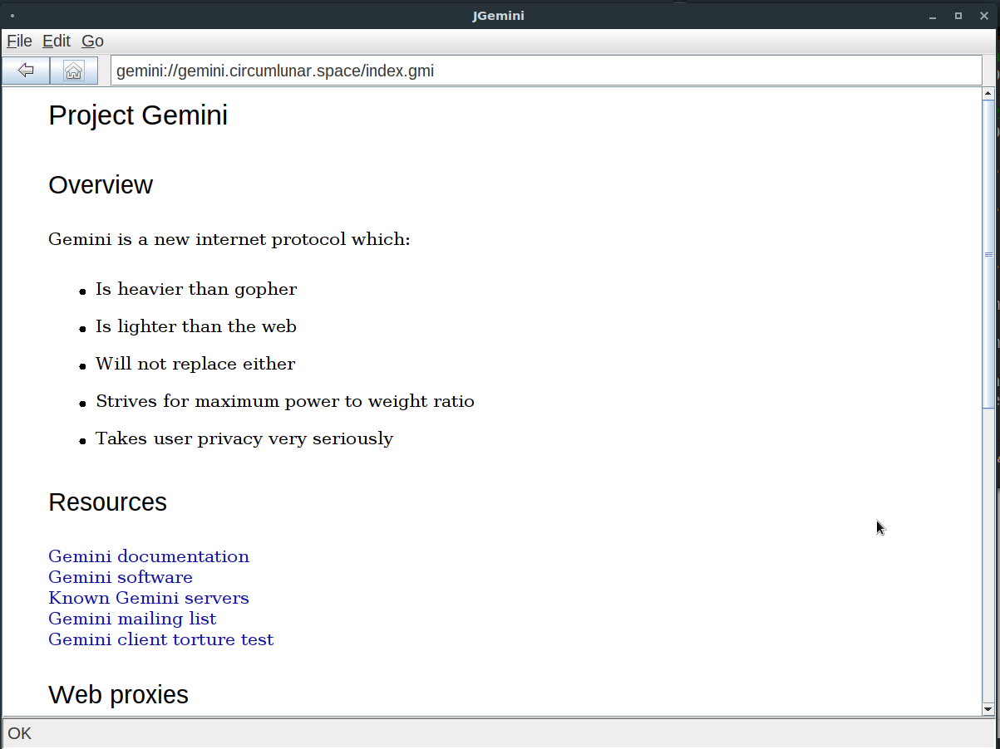

JGemini -- a Java-based browser for Project Gemini protocols and content

Project Gemini is a protocol and document format for Internet document delivery. It's hugely simpler that the protocols and formats that now make up the Web, and it's designed from the start to be non-extensible. The idea is to go back to an Internet experience of twenty years or so ago, when the Web was a new thing, and before commercialization and big-business exploitation made the Web the minefield it currently is. To some extent, Gemini is an outgrowth of the Gopher system that was very popular before modern Web technologies took off.
Gemini's protocol and data format are very simple, and the non-extensibility principle means that they can't become more complex, except by breaking backward compatibility completely. There's no way, for example, that "cookie" support could be added to the Gemini protocol, without making it something radically different. This is not seen as a defect by its proponents, but a feature.
I'm very much in favour of the principle that underlies Gemini although, as I've written elsewhere I think there are problems with the implementation that will hinder its uptake. Still, I think it's important to give these things due consideration. When I tried to investigate "Gemini space", I found immediately that there was not a Linux browser client that I found agreeable to use. I was expecting to have to build something from source -- that's the way with Linux, unless software is mainstream enough to be in a major repository. But most of the clients I tried wouldn't build at all -- either because the build process was poorly documented, or because the dependencies were so complicated.
The few clients that did build did not run. Given how simple the protocol is (I say this with some reservation, as it uses TLS), it shouldn't be hard to write a workable client (hah! -- or so I thought). In fact, there are console clients for Linux, like Amfora, which work perfectly well.
Of course, I have to qualify the term "perfectly well" -- I mean "perfectly well for a console application". I've got nothing against console applications -- I spend most of my working day looking at a command prompt -- but I don't find them particularly useful for reading text. There's a limit to how much fixed-pitch, 80-column, margin-less material I can read. As somebody who maintains a console EPUB reader, the irony of this statement is not lost on me.
In any event, selecting links by scrolling through them using the tab key -- meh. It's not 1970 any more. Using Amfora is a bit like using the console Web browser Lynx -- there's certainly a place for these things, but for casual browsing I want something that behaves at least as if it were from the 90s, rather than the 70s.
To cut a long story short, I decided to write my own graphical Gemini client, "JGemini", predominantly for Linux. This article describes why I did it the way I did, and what the results were. TL;DR -- it works, but I wouldn't do it the same way if I had to do it again.
Language choice
I needed a client that would run on Linux -- any Linux, with no fussy dependencies. It needed to have a graphical user interface, which means using a GUI (graphical user interface) toolkit of some kind. I didn't want to spend more than a couple of evenings getting something basically usable. My normal language of choice for Linux development is C, but a couple of things argued against C in this case.
First, writing graphical user interfaces in C for Linux has become a miserable experience. There are many GUI toolkits available, but only Qt and GTK are still widely supported. Both have the problem of unstable APIs -- they change so quickly, that it's hard to be sure that a C application that works on one Linux version will even build on another. I've had the experience that a GTK-based application that builds cleanly on, say, Fedora will produce thousands of warning messages on Ubuntu. It's very difficult to tell whether those warnings are significant or not. Writing GUI applications in C for Linux is not as much fun as it was back in the days of GTK+-1 and Qt3.
The other problem is TLS support. I have written code that uses OpenSSL for TLS support on Linux but, again, it's not a lot of fun. I really needed a language with fully-integrated TLS support, and built-in GUI capabilities on Linux, that would work on more-or-less any Linux variant. Frankly, it's Java; what else could it be?
Java user interface model
I suspect that one of the things that made Java so popular originally as its cross-platform GUI support. The Java user interface was not -- and still is not -- particularly easy on the eye, but at least it looks and works the same on every platform. With a bit of customization, a Java user interface can be made to look, well, OK. Sort of.
Now, of course, Java is more widely-used in server and middleware development, and few, new Java GUI applications are being built. The exception, I guess, is in Android; but Android has its own GUI model that is not available on non-Android systems.
For many years, the workhorse of Java GUI development was Java Swing. Almost all mainstream Java applications that have a graphic interface were, and still are, using it. The modern(-ish) replacement is Java FX although, at the time of writing, there are still unanswered questions about distributing it, and its long-term future. I would prefer a program that needs nothing but a stock JVM, and my relatively small amount of compiled code so, to be honest, it was Swing or nothing. It was odd, dusting off Swing again after all these years, but it still works as well (or as badly) as it ever did.
Processing Gemini documents
The basic document type for Gemini is the newly-designed
"Gemtext", which the server signals using the (non-standard) MIME type
text/gemini. Gemini is a very simple format -- simpler
even than Markdown. It supports only plain text (one paragraph to a line),
headings, and
links. It wouldn't be difficult to write a Java Swing class that
renders Gemtext but, in fact, I decided (perhaps wrongly) that
a better approach would
be to convert the Gemtext to HTML. That way I could use Swing's built-in
HTML rendering support. One disadvantage of this approach, which I
did not discover (or re-discover) until work was well along, was that
the built-in HTML control does not support right mouse button clicks. So,
while you can click on a link and follow it to a new document, there's no
easy way to inmplement a right-click content menu. There's no obvious
way to implement a scheme where the user right-clicks a link, and gets
a menu of choices how to process it ("Open", "Save", "Open in new window"...)
Still, using HTML as the medium of presentation makes it relatively easy to adapt the application to handle other document types -- Markdown, for example. And, of course, HTML itself. For better or worse, though, the HTML support in Java is firmly entrenched in the 90s. There's little chance of using it to render a modern website. Of course, in an application like this, you wouldn't want to. The whole point of Gemini is to get away from contemporary Web technologies.
Handling the Gemini protocol
Java has a concept of a "URL". The java.net.URL
class is the standard entry point for all code that fetches specific
content from a
remote server. The JVM has built-in support for HTTP, FTP, local files
URLs, etc. Of course, it has no support for the Gemini protocol, and
Gemini is not quite HTTP-like enough just to use the HTTP handler.
One limitation of using the built-in HTML viewer was that I was completely constrained to using Java's URL-based protocol handlers. If you formulate an HTML hyperlink in a document, then the viewer will invoke a program-defined handler if the user clicks a link but only if you use a recognized URL. So if I converted a Gemtext link like this:
=> gemini://foo.bar/ Click meinto displayable HTML like this:
<a href="gemini://foo.bar/">Click me</a>
Java's URL handler would not even pass my gemini link
to my program code when the link was clicked. In Java, a
gemini URL is not even a dysfunctional or unsupported
URL -- it simply isn't a URL at all.
To get around this problem I had to implement a custom URL handler
for the Gemini protocol. This isn't particularly difficult, although
it's slightly fiddly for protocols that aren't very HTTP-like.
However, a problem that is insurmountable
(with my implementation) is that if a Gemtext document containers
Gopher links (gopher://xxx) my program can't even
invoke a different program to handle them -- these links simply don't
even exist, so far as Java is concerned.
If I had more time to spend on this, I think it would be more effective in the long run to render the Gemtext document using my own code, and handle the links myself. Using Java's built in HTML support is quick, but not at all extensible.
TLS issues
Making TLS encryption a mandatory part of Gemini was not the most popular decision, but we're stuck with it -- at least so long as Gemini remains active. Java has built-in support for TLS, and needs no additional installation for the TLS ciphers that Gemini allows.
In practice, all Gemini servers use self-signed certificates to identify themselves. Most "conventional" websites use certificates validated by a commercial certificate authority, and browsers display scary warning messages when presented with a self-signed certificate. That's fair enough because there's really no way, in practice, for the client's user to know whether the certificate is genuine or not. In principle, the user can examine the certificate, but what user does this? If it's a website I know, I just click the "Do it anyway" button without even checking (I wouldn't know what to check for, anyway).
Because Gemini servers all use self-signed certificates, prompting the user to check the certificate every time seems like a wrong-headed approach to me -- even though this is what the Gemini specification recommends. I could have the program store a database of certificates the user had approved but, frankly, what's the point? There's really no grounds on which to decide whether to trust the certificate or not.
Consequently, JGemini just assumes all self-signed certificates are acceptable. I'm not entirely comfortable with this implementation, but I'm not entirely comfortable with TLS in general, and this is a relatively small aspect of the problem.
It's an oddity of the Gemini protocol that there is no specific "close connection" handshake. The server just closes its connection when it's sent all the data it plans to send. If the server does this without due diligence at the TLS level, Java reports a TLS error (which, perhaps, it is). I noticed that my client was complaining about sites that other clients seemed prepared to tolerate, so I modified it such that, if any network-related exception is raised after the client has received some data from the server, the data is presented to the user. The exception is ignored. This mechanism makes it hard to distinguish "real" network failures, but I'm not sure what alternative there might be. Unlike HTML, which has a definite "end of message" tag, there's no way for a machine to tell whether a Gemtext document was received completely or not.
Swing threading issues
JGemini has the same problem that all Swing applications have, if they carry out operations that take time -- Swing is single-threaded. You can't fetch data from a server on the user interface thread, because it will lock up the entire interface. But you can't spawn another thread to fetch the data, and have it update the user interface when the data arrives, because only one thread can update the user interface.
What you've got to do is to spawn a thread to do the network operation,
and then synchronize it to the GUI thread by means of mutexes.
Java provides a handy class called SwingWorker to
automate this process. The application defines a
subclass of SwingWorker that does the data transfer,
and which gets called by
Swing when it's time to update the GUI. It's still very difficult to
provide, say, a progress bar when the worker thread is performing
an operation that takes an unspecified length of time -- the
Gemini protocol lacks even a way for the server to tell the client
how much data to expect. As a result, when loading a new page, it's
not easy to tell that the program is actually doing anything, until
it's either finished, or it produces an error message. However,
you can at least cleanly terminate the background data retrieval and
move to another page, and JGemini will attempt to terminate the ongoing
network operation. My experience is that most current Gemini servers
are slow-ish, compared to mainstream HTTP servers, and it would be nice
to be able to report the progress of data transfers to the user.
Caching
In the current implementation, JGemini does not cache anything. Even hitting the "Back" button results in the page being reloaded.
Caching would not be hard to implement, but I wonder whether there would be any point. The Gemini protocol does not provide any control of caching -- it does not even send a "last-modified" time. There's simply no way for the client to tell whether a particular page has been updated since it was cached.
Some Gemini servers are slow, and it would be useful to be able to cache their pages. There just doesn't seem to be a robust mechanism for doing this.
The result
The screenshot below shows JGemini in action. When running it on a Gnome desktop it looks pretty old-fashioned, compared to modern software written specifically for Gnome. On the other hand, JGemini should run pretty much anywhere, and will always look much the same.

Fonts, colours, etc., are all configurable -- but only by hacking a configuration file. I really don't have any need to spend a lot of time implementing an interactive configuration system.
JGemini looks and feels like the Web browsers of the mid-90s. That isn't intentional, but it's oddly fitting. The program supports Gemtext, plain text with most encodings, and Markdown. All other formats are handed off to the desktop to handle, as are recgonized URLs other than Gemini URLs. There are limited searching facilities, and text can be cut-and-pasted out of the viewer into other applications. Doing all the data collection in a background thread makes the user interface reasonably responsive.
In all, despite its many limitations, GJemini works well enough for my purposes. If I were maintaining this on a long-term basis, I'd start again with completely different design decisions; but I'm not sure that will be necessary. I'd be happy to be proven wrong, though.
Source code, and compiled Java JARs, are available from my GitHub repository. The README page in the repository contains brief usage instructions but I think, on the whole, it's pretty self-explanatory -- particularly if you used a Web browser in the 90s.